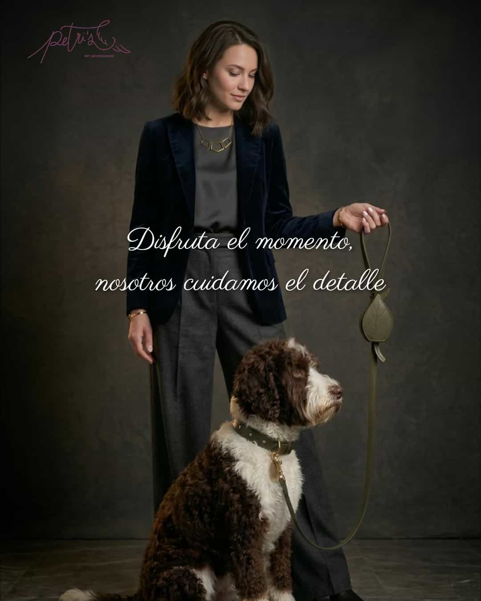
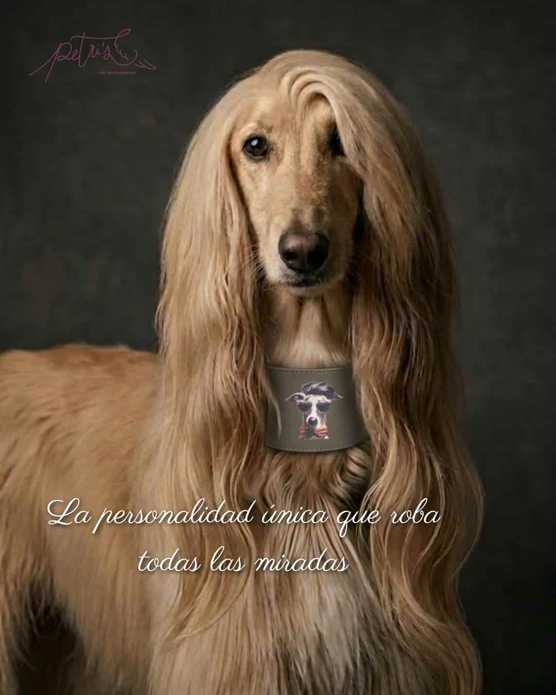
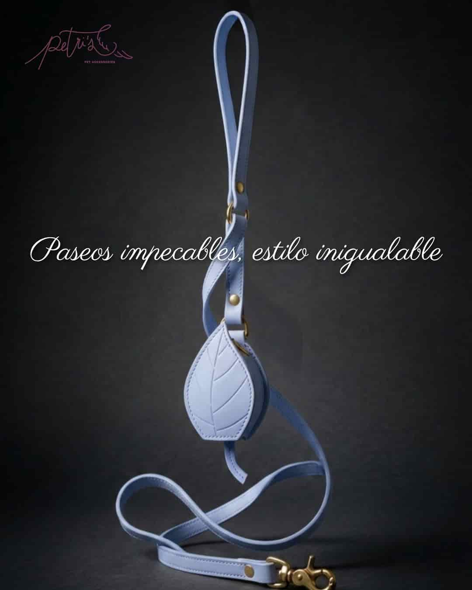
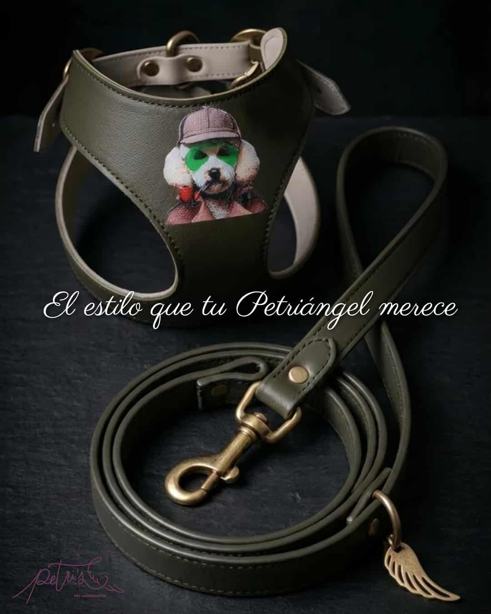

Construí una historia de estilo de vida donde el vínculo entre dueño y mascota es el protagonista. Cada pieza fue diseñada para evocar elegancia y sofisticación.
Proyecto real
Petri's Pets
Consolidé el posicionamiento de una marca artesanal en el sector pet-luxury, aumentando la percepción de valor del producto mediante una narrativa visual centrada en la exclusividad, la artesanía y el bienestar animal. Implementé estrategias de Reels que fusionan la estética premium con la funcionalidad técnica (salud veterinaria + diseño). Esto demostró mi capacidad para equilibrar la comunicación emocional con la propuesta de valor del producto, logrando mantener el interés del usuario sin sacrificar la esencia artesanal.

Ejecuté una estrategia de contenido enfocada en la diferenciación. A través de una estética cuidada (fondos, iluminación, copywriting aspiracional), logré transformar accesorios funcionales en piezas de deseo, consolidando la identidad de marca como referente en alta costura canina.
Aumenté el valor de la artesanía mediante un enfoque en la personalización. La narrativa resalta la exclusividad de cada pieza al incluir una ilustración única, transformando un producto funcional en un objeto de colección y un vínculo emocional entre el dueño y su mascota.

Realicé este Reel para captar la atención de un público nicho. Mi objetivo fue sintetizar la complejidad técnica y la calidad de los materiales en una narrativa dinámica, logrando que el espectador no solo vea el producto, sino que perciba el valor intrínseco de la fabricación artesanal.
Diseñé este post basado en el contraste y la sobriedad, utilizando fondos oscuros para aumentar la percepción de lujo del portabolsas. A través del copywriting estratégico, consolidé la asociación del producto con una experiencia de uso sofisticada, apelando directamente a un segmento de cliente que prioriza la distinción y el detalle.

Presenté el arnés y la correa con charm distintivo como un total look coherente. Este post articula la propuesta de valor integral de la marca, diseñada específicamente para captar a un cliente que no busca un simple accesorio, sino un sello de identidad, calidad y diseño que refuerce su propio estilo de vida.
